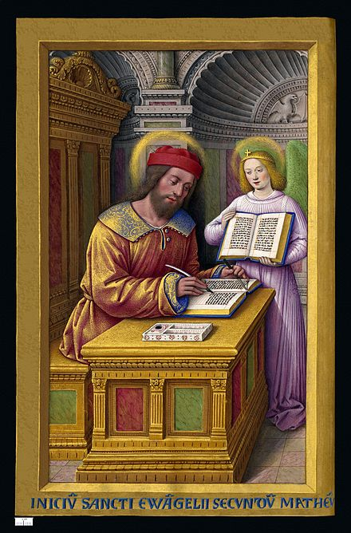
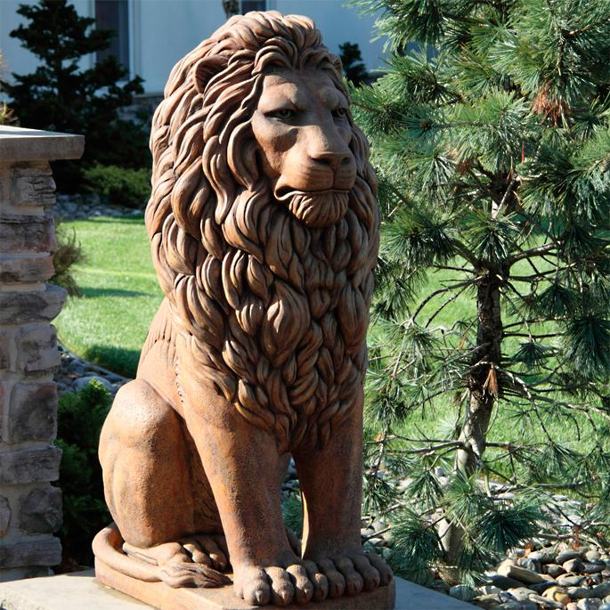

My name is Matthew "MTA (Matthew the Apostle)" Gallegos (a.k.a Saint Matthew) to my adoring fans.
I'm 19 and I'm from Albuquerque. I'm a major league baller with my fellow Apostles. We bad. My favorite team is the Spurs. I'm also partial to the Holy Roller Ballers and Holy Roller music group. Some of my favorite artists are, J.Cole and Mac Miller.
I graduated high school the year of the Pig, according to the chinese zodiac, class of 2019 from Amy Biehl High School. GOOO LIONS!!!! Lions love pork. 
ROARRRR!!! Don't be afraid.
That's how we do it at A.B.H.S!
There I got a lot of community work experience, when I'm not praying or balling with The Apostles. I began to take a interest in coding, specifically biblical coding, and that all mighty technology. All through out highschool I wanted to go to culinary school. Because the Apostles do get hungry and need to be fed. I make great holy bread. I eventually lost interest in culinary and gained more of an interest in software development prayers.